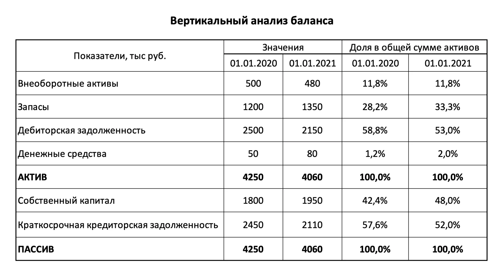

Вертикальный анализ
Вертикальный анализ отчетности – сравнительный анализ, при котором изучается соотношение выбранного показателя с другими однородными показателями в рамках одного отчетного периода. Вертикальный анализ позволяет определить структуру имущества, обязательств, доходов, расходов организации.
Проведение вертикального анализа
Вертикальный анализ бухгалтерского баланса основан на расчёте удельного веса показателей бухбаланса в укрупнённой группе. Например, можно рассчитать долю основных средств во внеоборотных активах, долю запасов в оборотных активах и так далее. Для проведения вертикального анализа нужно принять валюту баланса за 100% и рассчитать долю каждой статьи в ней по формуле. Далее составить аналитическую таблицу, в которой представить статьи активов и пассивов как долю от валюты баланса.
Вертикальный анализ проводят в несколько этапов: находят бухгалтерский баланс за интересующие периоды; рассчитывают долю каждой статьи в общей структуре; анализируют и делают выводы. В качестве примера рассмотрим структурный анализ баланса:
